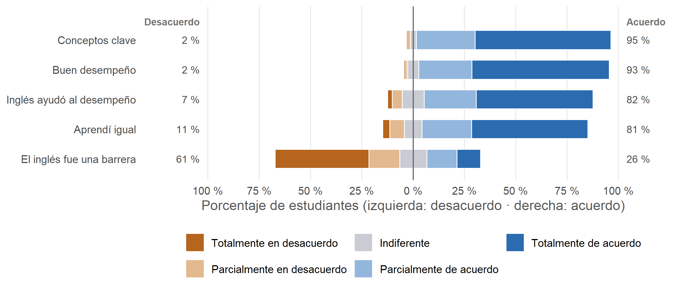
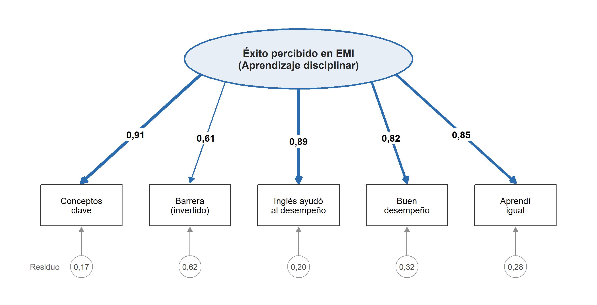
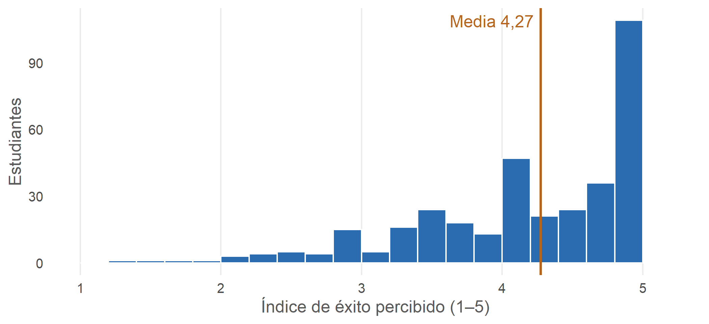

Capítulo 3 Cómo medir la autopercepción del éxito
La encuesta no tiene notas ni promedio académico, así que el “éxito” es autopercibido. Se construyó un índice con cinco ítems de la dimensión Aprendizaje disciplinar del cuestionario, los que hablan directamente de comprender y rendir en las asignaturas. Cada ítem va de 1 (totalmente en desacuerdo) a 5 (totalmente de acuerdo), y el índice es el promedio de los cinco.
3.1 Dimensiones del instrumento y origen de los ítems
El cuestionario tiene 25 ítems Likert de cinco puntos, organizados en 5 dimensiones. La tabla muestra a qué dimensión pertenece cada ítem y cuáles se usan en este análisis.
| # | Dimensión | Ítem | Uso en este análisis |
|---|---|---|---|
| 1 | Dominio del inglés | En general, comprendí las explicaciones en inglés dadas por los profesores. | No se usa |
| 2 | Dominio del inglés | Leer textos académicos en inglés fue un reto que dificultó mi comprensión de las temáticas del curso. | No se usa |
| 3 | Dominio del inglés | Los textos y materiales en inglés fueron comprensibles en la mayoría de los cursos. | No se usa |
| 4 | Dominio del inglés | Sentía que no era capaz de aprender bien debido a mis limitaciones en inglés. | Solo versión de 7 ítems, invertido |
| 5 | Dominio del inglés | Me resultó fácil expresar mis ideas y opiniones en inglés durante las clases. | No se usa |
| 6 | Dominio del inglés | Mi nivel de participación en las clases dictadas en inglés es el mismo que cuando las clases son en español. | No se usa |
| 7 | Dominio del inglés | Tuve dificultades para participar oralmente debido a mi nivel de idioma. | No se usa |
| 8 | Aprendizaje disciplinar | Pude entender los conceptos clave de las asignaturas impartidas en inglés. | Índice (5 ítems) |
| 9 | Aprendizaje disciplinar | Mi conocimiento previo de la materia me ayudó a comprender las temáticas del curso impartido en inglés. | No se usa |
| 10 | Aprendizaje disciplinar | El inglés fue una barrera para demostrar mi conocimiento sobre los temas de la clase. | Índice (5 ítems), invertido |
| 11 | Aprendizaje disciplinar | Mi nivel de inglés me ayudó a tener un buen desempeño académico en las asignaturas. | Índice (5 ítems) |
| 12 | Aprendizaje disciplinar | Me resultó fácil expresar mis ideas y opiniones en inglés durante las clases. (repetido) | No se usa |
| 13 | Aprendizaje disciplinar | Logré un buen desempeño académico en las asignaturas, a pesar de fueron dictadas en inglés. | Índice (5 ítems) |
| 14 | Aprendizaje disciplinar | En mis cursos del programa en inglés, aprendí igual que en los cursos impartidos en español. | Índice (5 ítems) |
| 15 | Pedagogía y recursos | Los docentes tienen un nivel suficiente de inglés para dictar la clase en ese idioma. | No se usa |
| 16 | Pedagogía y recursos | Los materiales que usaron los profesores en las clases fueron adecuados para enseñar las temáticas del curso. | No se usa |
| 17 | Pedagogía y recursos | Las evaluaciones me permitieron demostrar mis conocimientos independientemente de mi nivel de inglés. | No se usa |
| 18 | Pedagogía y recursos | Las actividades usadas por el profesor en las clases dictadas en inglés facilitaron el aprendizaje de las temáticas del curso. | No se usa |
| 19 | Pedagogía y recursos | Utilicé los recursos de apoyo (centro de apoyo a los estudiantes, centros de escritura) que ofrece la universidad para comprender mejor las temáticas de los cursos. | No se usa |
| 20 | Motivación y actitudes | Tuve la necesidad de prepararme más para los cursos dictados en inglés que para los que son en mi lengua. | No se usa |
| 21 | Motivación y actitudes | Me sentí cómodo/a porque entendí las temáticas de las clases en inglés. | Solo versión de 7 ítems |
| 22 | Motivación y actitudes | Tomar asignaturas de mi programa en inglés me generó cansancio mental. | No se usa |
| 23 | Proyección futura | Creo que los cursos dictados en inglés me van a preparar para mi futuro. | No se usa |
| 24 | Proyección futura | Estaría dispuesto/a a seguir tomando cursos del programa dictados en inglés. | No se usa |
| 25 | Proyección futura | Recomendaría a otros estudiantes tomar cursos del programa dictados en inglés. | No se usa |
| Dimensión | N.º de ítems | Ítems en el índice | Ítems solo en la versión de 7 |
|---|---|---|---|
| Dominio del inglés | 7 | 0 | 1 |
| Aprendizaje disciplinar | 7 | 5 | 0 |
| Pedagogía y recursos | 5 | 0 | 0 |
| Motivación y actitudes | 3 | 0 | 1 |
| Proyección futura | 3 | 0 | 0 |
Las dimensiones corresponden a las secciones del formulario: Experiencia lingüística en asignaturas dictadas en inglés (dominio del inglés), Aprendizaje en asignaturas dictadas en inglés (aprendizaje disciplinar), Pedagogía y recursos para el aprendizaje, Motivación y actitudes y Pensando más adelante (proyección futura). En azul y negrita, los ítems del índice; en cursiva, los que solo entran en la versión ampliada de 7 ítems.
Por qué estos cinco ítems. La dimensión Aprendizaje disciplinar tiene siete ítems, y el índice usa cinco. Se dejaron por fuera dos:
- “Mi conocimiento previo de la materia me ayudó a comprender las temáticas del curso”: no mide éxito, sino un recurso previo del estudiante. En el modelo conceptual sería un antecedente, no parte del resultado.
- “Me resultó fácil expresar mis ideas y opiniones en inglés durante las clases”: es la repetición exacta de un ítem de la dimensión Dominio del inglés (capítulo 2) y mide habilidad oral en el idioma, no aprendizaje de la materia.
Los otros cinco ítems preguntan por el resultado del aprendizaje en la asignatura (entender los conceptos, rendir bien, aprender igual que en español, que el inglés no impida demostrar lo aprendido). Por eso el índice representa una sola dimensión del instrumento, y el análisis factorial confirmatorio de la sección 3.2.3 pone a prueba precisamente esa estructura.
3.1.1 Descriptivos de los ítems del índice

Figura 3.1: Distribución de las respuestas a los cinco ítems del índice (dimensión Aprendizaje disciplinar). Las barras se centran en la respuesta neutral; el ítem de barrera se muestra con su redacción original, de modo que para él el desacuerdo indica éxito.
| Dimensión | Ítem | Media | DE | Mediana | Mínimo | Máximo | % de acuerdo | Asimetría |
|---|---|---|---|---|---|---|---|---|
| Aprendizaje disciplinar | Pude entender los conceptos clave de las asignaturas impartidas en inglés. | 4,58 | 0,68 | 5 | 1 | 5 | 95 % | -1,97 |
| Aprendizaje disciplinar | El inglés fue una barrera para demostrar mi conocimiento sobre los temas de la clase. (invertido) | 2,31 | 1,46 | 2 | 1 | 5 | 26 % | 0,63 |
| Aprendizaje disciplinar | Mi nivel de inglés me ayudó a tener un buen desempeño académico en las asignaturas. | 4,30 | 1,00 | 5 | 1 | 5 | 82 % | -1,48 |
| Aprendizaje disciplinar | Logré un buen desempeño académico en las asignaturas, a pesar de que fueron dictadas en inglés. | 4,57 | 0,71 | 5 | 1 | 5 | 93 % | -2,07 |
| Aprendizaje disciplinar | En mis cursos del programa en inglés, aprendí igual que en los cursos impartidos en español. | 4,23 | 1,10 | 5 | 1 | 5 | 81 % | -1,44 |
Valores en la escala original (1 = totalmente en desacuerdo; 5 = totalmente de acuerdo), con el ítem de barrera sin invertir. % de acuerdo = respuestas 4 o 5.
Los cinco ítems usan todo el rango de la escala (de 1 a 5), así que hubo estudiantes en ambos extremos. En conceptos clave, buen desempeño, inglés ayudó al desempeño y aprendí igual, más del 50 % de los estudiantes respondió 5, “totalmente de acuerdo” (entre el 57 % y el 67 %, según el ítem). En el ítem de barrera, más del 50 % de los estudiantes respondió en desacuerdo (el 61 % marcó 1 o 2), lo que en ese ítem indica éxito.
Como más de la mitad de los estudiantes se concentra en el extremo favorable, las medias de los cuatro ítems positivos (entre 4,23 y 4,58) quedan por debajo de 5, arrastradas por el grupo menor que respondió valores bajos, y la asimetría es negativa. En el ítem de barrera ocurre lo contrario (media de 2,31 y asimetría positiva), porque su redacción está invertida. Es el mismo efecto techo, descrito más abajo, visto desde los dos sentidos de la escala.
3.2 Confiabilidad
La confiabilidad se estimó con el alfa de Cronbach y, por las razones que se explican abajo, también con el omega de McDonald y con sus versiones ordinales. Todos los cálculos están en el archivo R/alfa_cronbach.R del repositorio. El alfa se calculó con su fórmula y se verificó contra la función psych::alpha: los dos resultados coinciden.
| Coeficiente | Base | Valor | IC 95 % | Interpretación |
|---|---|---|---|---|
| Alfa de Cronbach | Covarianzas (Pearson) | 0,804 |
0,769 – 0,835 (Feldt) 0,760 – 0,839 (bootstrap) |
Consistencia interna buena. Supera el mínimo de 0,70 para investigación (Nunnally y Bernstein, 1994) y el límite inferior del intervalo también lo supera. |
| Alfa estandarizado | Correlaciones (Pearson) | 0,844 | Mayor que el alfa bruto (diferencia de 0,040) porque los ítems tienen varianzas muy distintas. Indica que no se cumple la tau-equivalencia. | |
| Omega de McDonald (ω total) | Modelo de un factor (ML) | 0,849 | 0,817 – 0,877 (bootstrap) | Confiabilidad buena. No exige que los ítems pesen igual, así que es el coeficiente más adecuado aquí y el que se recomienda reportar (Dunn et al., 2014). |
| Alfa ordinal | Correlaciones policóricas | 0,907 | Confiabilidad excelente. Trata las respuestas Likert como ordinales (Zumbo et al., 2007). Es más alto porque corrige la atenuación que producen 5 categorías con efecto techo. | |
| Omega ordinal | Modelo de un factor sobre correlaciones policóricas | 0,910 | Confiabilidad excelente. Combina las dos correcciones: cargas distintas y escala ordinal. |
IC de Feldt (1965) basado en la distribución F; IC bootstrap percentil con 2.000 remuestreos de estudiantes.
3.2.1 Diagnóstico por ítem
| Ítem | Varianza | Carga factorial | r ítem-total corregida | α si se elimina | Interpretación |
|---|---|---|---|---|---|
| Conceptos clave | 0,46 | 0,81 | 0,70 | 0,757 | Ítem fuerte: carga alta y buena discriminación. Eliminarlo bajaría α a 0,757. |
| Barrera (invertido) | 2,12 | 0,53 | 0,49 | 0,840 | Ítem más débil. Discrimina por encima del mínimo de 0,30, pero eliminarlo subiría α a 0,840. Tiene la mayor varianza (2,12), probablemente por su redacción en negativo. |
| Inglés ayudó al desempeño | 0,99 | 0,81 | 0,72 | 0,726 | Ítem fuerte: carga alta y buena discriminación. Eliminarlo bajaría α a 0,726. |
| Buen desempeño | 0,51 | 0,69 | 0,60 | 0,775 | Ítem adecuado: carga aceptable y buena discriminación. Eliminarlo bajaría α a 0,775. |
| Aprendí igual | 1,20 | 0,78 | 0,67 | 0,739 | Ítem fuerte: carga alta y buena discriminación. Eliminarlo bajaría α a 0,739. |
Carga factorial: análisis factorial de un factor por máxima verosimilitud. r ítem-total corregida: correlación de cada ítem con la suma de los otros cuatro. Criterios de referencia: carga ≥ 0,40 y r ítem-total ≥ 0,30.
3.2.2 Supuestos y estructura
| Revisión | Resultado | Criterio | Interpretación |
|---|---|---|---|
| Unidimensionalidad (modelo exploratorio de un factor, ML) |
χ²(5) = 5,70, p = 0,336 RMSEA = 0,020, TLI = 0,998 |
p > 0,05; RMSEA ≤ 0,06; TLI ≥ 0,95 (Hu y Bentler, 1999) | Se cumple. Un solo factor reproduce bien las correlaciones entre los cinco ítems, así que tiene sentido sumarlos en un índice. |
| Tau-equivalencia (cargas iguales) | Cargas de 0,53 a 0,81 | Cargas similares entre ítems | No se cumple. El ítem de barrera pesa bastante menos que los demás. Por eso el alfa subestima la confiabilidad y el omega es preferible. |
| Varianzas de los ítems | De 0,46 a 2,12 | Varianzas similares | No se cumple. El ítem de barrera tiene casi cinco veces la varianza del ítem de conceptos, lo que explica la diferencia entre alfa bruto y estandarizado. |
| Nivel de medida | Likert de 5 puntos, asimetría negativa | Variables continuas | Se cumple parcialmente. Con 5 categorías y efecto techo, las correlaciones de Pearson se atenúan; las versiones ordinales corrigen ese sesgo. |
Esta revisión usa un análisis factorial exploratorio que trata los ítems como continuos. La estructura se pone a prueba de forma confirmatoria, y con los ítems como ordinales, en la sección siguiente.
3.2.3 Análisis factorial confirmatorio ordinal
Se estimó un modelo de un factor (éxito percibido) con los cinco ítems como indicadores, tratados como variables ordinales. El estimador fue WLSMV (mínimos cuadrados ponderados con media y varianza ajustadas) sobre la matriz de correlaciones policóricas. Es el estimador recomendado para ítems Likert de pocas categorías y distribución asimétrica (Brown, 2015; Li, 2016). La escala del factor se fijó con varianza igual a 1, de modo que se estiman las cinco cargas. Se usó el paquete lavaan (Rosseel, 2012); el código está en R/afc_ordinal.R.
Preparación de las categorías. Con WLSMV, cada categoría de respuesta genera un umbral, y las categorías con muy pocas respuestas producen umbrales inestables. En 3 ítems la categoría 1 o la 2 tenía menos de 10 respuestas, así que en esos ítems se unieron “totalmente en desacuerdo” y “parcialmente en desacuerdo”. El modelo también se estimó con las cinco categorías originales como análisis de sensibilidad.
| Ítem | Cat. 1 | Cat. 2 | Cat. 3 | Cat. 4 | Cat. 5 | Tratamiento |
|---|---|---|---|---|---|---|
| Conceptos clave | 1 | 7 | 10 | 100 | 230 | Categorías 1 y 2 unidas |
| Barrera (invertido) | 40 | 51 | 46 | 52 | 159 | 5 categorías |
| Inglés ayudó al desempeño | 8 | 17 | 37 | 88 | 198 | Categorías 1 y 2 unidas |
| Buen desempeño | 3 | 3 | 19 | 90 | 233 | Categorías 1 y 2 unidas |
| Aprendí igual | 12 | 25 | 30 | 84 | 197 | 5 categorías |
3.2.3.1 Diagrama del modelo

Figura 3.2: Modelo de medida del AFC ordinal. El óvalo es el factor latente (dimensión Aprendizaje disciplinar); los rectángulos son los ítems observados. En las flechas, las cargas estandarizadas (λ); debajo de cada ítem, su varianza residual (1 − R²). Todas las cargas son significativas (p < 0,001).
Las cargas más altas están en Conceptos clave (0,91) e Inglés ayudó al desempeño (0,89): son los ítems que mejor representan la dimensión. Barrera tiene la carga más baja (0,61) y la mayor varianza residual (0,62): más de la mitad de lo que mide no lo comparte con el factor.
3.2.3.2 Ajuste del modelo
| Índice | Modelo principal | Sensibilidad (5 categorías) | Criterio | Interpretación |
|---|---|---|---|---|
| χ² escalado (gl) | 3,66 (5) | 6,68 (5) | p > 0,05 | p = 0,600. No se rechaza el modelo: las correlaciones que predice un solo factor no difieren de las observadas. |
| CFI robusto | 1,000 | 0,999 | ≥ 0,95 | Ajuste excelente. El modelo de un factor explica casi toda la covariación entre los ítems. |
| TLI robusto | 1,000 | 0,997 | ≥ 0,95 | Ajuste excelente. El valor estimado supera 1, algo esperable con χ² menor que sus grados de libertad; se reporta como 1,000. |
| RMSEA robusto [IC 90 %] | 0,000 [0,000–0,076] | 0,030 [0,000–0,096] | ≤ 0,06; límite superior del IC ≤ 0,08 | Ajuste bueno. El límite superior del intervalo queda por debajo de 0,08; el intervalo es amplio porque el modelo tiene pocos grados de libertad. |
| SRMR | 0,011 | 0,014 | ≤ 0,08 | Ajuste excelente. Los residuos entre correlaciones observadas y predichas son mínimos. |
Criterios de Hu y Bentler (1999). Con WLSMV se reportan el χ² escalado y las versiones robustas de CFI, TLI y RMSEA. Un modelo de un factor con cinco indicadores tiene 5 grados de libertad, lo que limita la precisión del RMSEA.
3.2.3.3 Cargas factoriales
| Dimensión | Ítem | λ estandarizada | EE | IC 95 % | R² | λ (5 categorías) | Interpretación |
|---|---|---|---|---|---|---|---|
| Aprendizaje disciplinar | Conceptos clave | 0,91 | 0,020 | 0,87 – 0,95 | 0,83 | 0,91 | Carga alta: el ítem refleja bien el constructo (comparte más del 49 % de su varianza con el factor). |
| Aprendizaje disciplinar | Barrera (invertido) | 0,61 | 0,038 | 0,54 – 0,69 | 0,38 | 0,62 | Carga aceptable, pero la más baja del modelo. El ítem comparte menos de la mitad de su varianza con el factor, aunque supera con holgura el mínimo de 0,50. |
| Aprendizaje disciplinar | Inglés ayudó al desempeño | 0,89 | 0,020 | 0,85 – 0,93 | 0,80 | 0,88 | Carga alta: el ítem refleja bien el constructo (comparte más del 49 % de su varianza con el factor). |
| Aprendizaje disciplinar | Buen desempeño | 0,82 | 0,029 | 0,77 – 0,88 | 0,68 | 0,82 | Carga alta: el ítem refleja bien el constructo (comparte más del 49 % de su varianza con el factor). |
| Aprendizaje disciplinar | Aprendí igual | 0,85 | 0,024 | 0,80 – 0,90 | 0,72 | 0,85 | Carga alta: el ítem refleja bien el constructo (comparte más del 49 % de su varianza con el factor). |
Todas las cargas son significativas (p < 0,001). R² = proporción de la varianza de la respuesta latente de cada ítem que explica el factor. La última columna numérica muestra las cargas del modelo de sensibilidad.
3.2.3.4 Validez convergente, confiabilidad y residuos
| Indicador | Valor | Criterio | Interpretación |
|---|---|---|---|
| Varianza media extraída (AVE) | 0,682 | ≥ 0,50 (Fornell y Larcker, 1981) | Validez convergente adecuada: en promedio, el factor explica el 68 % de la varianza de los ítems. |
| Confiabilidad compuesta (escala latente) | 0,913 | ≥ 0,70 | Confiabilidad alta del constructo latente, calculada con las cargas del AFC. |
| Omega categórico (Green y Yang, 2009) | 0,829 | ≥ 0,70 | Confiabilidad buena del puntaje que realmente se usará (la suma de los ítems en su escala original). Es el valor de omega más apropiado para reportar con ítems ordinales. |
| Residuo máximo entre correlaciones | 0,029 | < 0,10 | Ningún par de ítems queda mal explicado por el modelo. |
| Índice de modificación más alto | 0,74 (Barrera (invertido) con Inglés ayudó al desempeño) | < 3,84 (χ² con 1 gl, p = 0,05) | Ninguna correlación entre errores mejoraría el modelo de forma significativa. No hay redundancias ni dimensiones ocultas entre los ítems. |
3.2.3.5 Interpretación del AFC
El AFC ordinal confirma que los cinco ítems miden un solo constructo. En el modelo principal, los cinco índices de ajuste cumplen los criterios de referencia, y ningún residuo ni índice de modificación sugiere una estructura distinta.
Con las categorías originales, las cargas son prácticamente iguales y el ajuste sigue siendo bueno (CFI = 0,999, SRMR = 0,014). La única diferencia es que el límite superior del IC del RMSEA llega a 0,096: con solo 5 grados de libertad ese intervalo es muy impreciso, y su estimación puntual (0,030) sigue siendo baja. Por tanto, la unión de categorías escasas estabiliza los umbrales pero no cambia las conclusiones.
El ítem de barrera vuelve a ser el más débil (λ = 0,61), pero su carga es significativa y supera el mínimo de 0,50. El AFC no da motivos psicométricos para eliminarlo; la decisión puede tomarse por razones conceptuales.
Para el artículo se puede reportar, por ejemplo: “Un análisis factorial confirmatorio con estimador WLSMV mostró un ajuste excelente del modelo unidimensional (χ²(5) = 3,66, p = 0,600; CFI = 1,000; RMSEA = 0,000, IC 90 % [0,000, 0,076]; SRMR = 0,011), con cargas estandarizadas entre 0,61 y 0,91, AVE = 0,68 y omega categórico = 0,83.”
3.2.4 Interpretación de conjunto
El índice de cinco ítems es confiable y unidimensional. Todas las estimaciones de confiabilidad superan 0,80, y el análisis factorial confirmatorio ordinal muestra un ajuste excelente del modelo de un factor. Esto respalda tratar los cinco ítems como una sola medida de éxito percibido.
Como no se cumple la tau-equivalencia, el alfa de Cronbach (0,804) es una estimación conservadora. Para el artículo se recomienda reportar como coeficiente principal el omega categórico del AFC (ω = 0,829), que corresponde al puntaje que se usa en los análisis y respeta la naturaleza ordinal de los ítems. El omega de McDonald con correlaciones de Pearson (ω = 0,849, IC 95 % 0,817 – 0,877) y el alfa de Cronbach pueden reportarse como referencia.
El único punto débil es el ítem de barrera: carga menos en el factor, tiene la mayor varianza y su eliminación subiría el alfa a 0,840. No es un problema grave, porque su discriminación (0,49) supera el mínimo de 0,30, pero conviene decidir si se mantiene. A favor de mantenerlo está que es el único ítem que pregunta directamente por el inglés como obstáculo, que es central para el marco de equidad.
Si se amplía el índice con “Sentía que no era capaz de aprender bien debido a mis limitaciones en inglés” (invertido) y “Me sentí cómodo/a porque entendí las temáticas”, el alfa llega a 0,865, aunque esa versión mezcla aspectos afectivos con el desempeño.
Referencias citadas en esta sección
- Brown, T. A. (2015). Confirmatory factor analysis for applied research (2.ª ed.). Guilford Press.
- Fornell, C. y Larcker, D. F. (1981). Evaluating structural equation models with unobservable variables and measurement error. Journal of Marketing Research, 18(1), 39–50.
- Green, S. B. y Yang, Y. (2009). Reliability of summed item scores using structural equation modeling: An alternative to coefficient alpha. Psychometrika, 74(1), 155–167.
- Li, C.-H. (2016). Confirmatory factor analysis with ordinal data: Comparing robust maximum likelihood and diagonally weighted least squares. Behavior Research Methods, 48(3), 936–949.
- Rosseel, Y. (2012). lavaan: An R package for structural equation modeling. Journal of Statistical Software, 48(2), 1–36.
- Dunn, T. J., Baguley, T. y Brunsden, V. (2014). From alpha to omega: A practical solution to the pervasive problem of internal consistency estimation. British Journal of Psychology, 105(3), 399–412.
- Feldt, L. S. (1965). The approximate sampling distribution of Kuder-Richardson reliability coefficient twenty. Psychometrika, 30(3), 357–370.
- Hu, L. y Bentler, P. M. (1999). Cutoff criteria for fit indexes in covariance structure analysis. Structural Equation Modeling, 6(1), 1–55.
- Nunnally, J. C. y Bernstein, I. H. (1994). Psychometric theory (3.ª ed.). McGraw-Hill.
- Zumbo, B. D., Gadermann, A. M. y Zeisser, C. (2007). Ordinal versions of coefficients alpha and theta for Likert rating scales. Journal of Modern Applied Statistical Methods, 6(1), 21–29.
3.3 Efecto techo

Figura 3.3: Distribución del índice de éxito percibido.
El índice tiene media 4,27 (DE 0,77) y asimetría negativa (-1,08). El 72 % de los estudiantes tiene un puntaje de 4 o más. Por eso los modelos usan errores estándar robustos y se repiten con una regresión ordinal como prueba de sensibilidad (capítulo 6).
¿Usamos este índice de 5 ítems, la versión de 4 sin el ítem de barrera o la de 7? El AFC ordinal respalda la versión de 5 ítems, así que la decisión sobre el ítem de barrera puede tomarse por razones conceptuales.